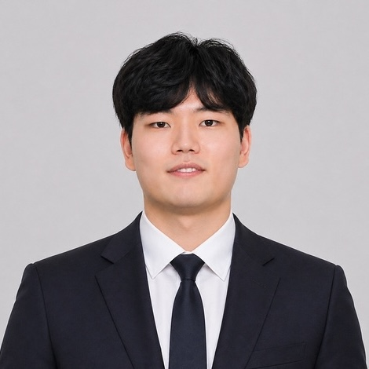

Hello, I'm Kyoseung Koo, a database systems Ph.D. from Seoul National University, now working as a software engineer at Finnest, where I build AI agents that automate finance operations, along with the data infrastructure behind them.
I also stay active in research, reviewing for international conferences and journals.
During my Ph.D., I built database systems for multi-model and array workloads, with papers published in SIGMOD and VLDB. I also served as a lecturer and teaching assistant for Samsung Electronics and Seoul National University. On the engineering side, I have delivered 10+ commercial software projects across web and mobile over the past decade.